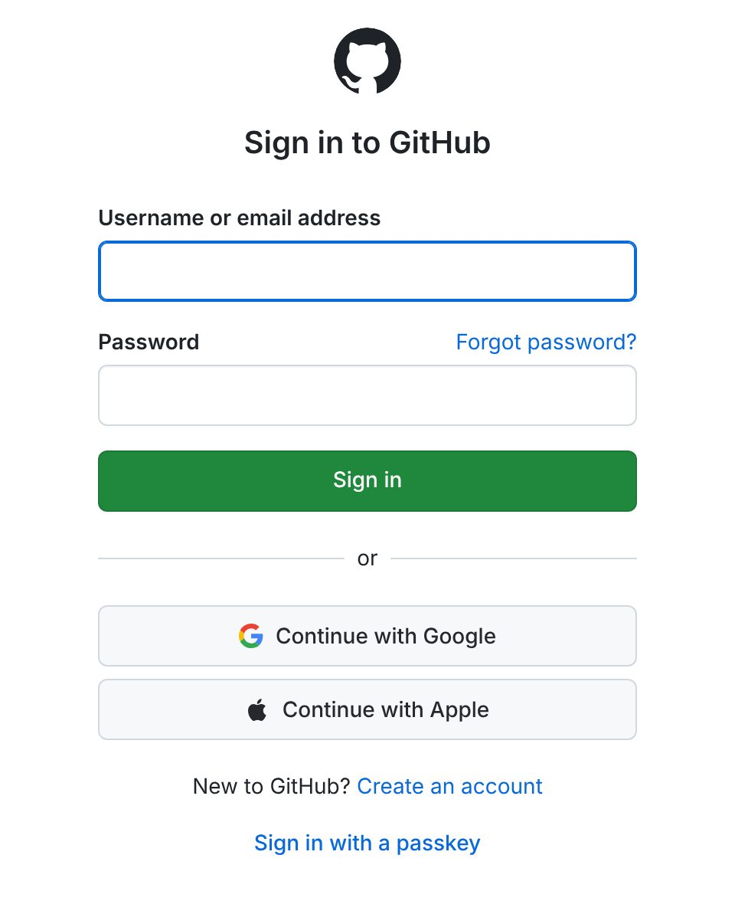
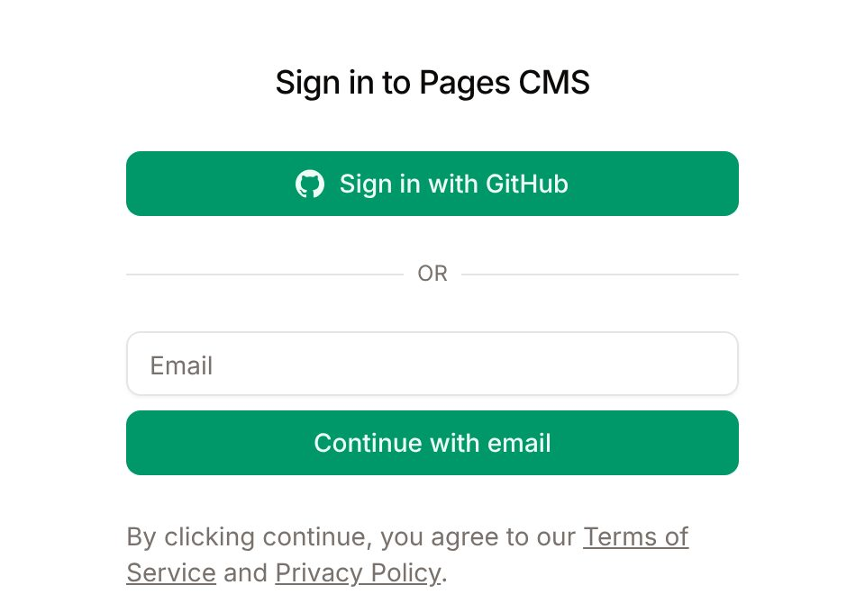
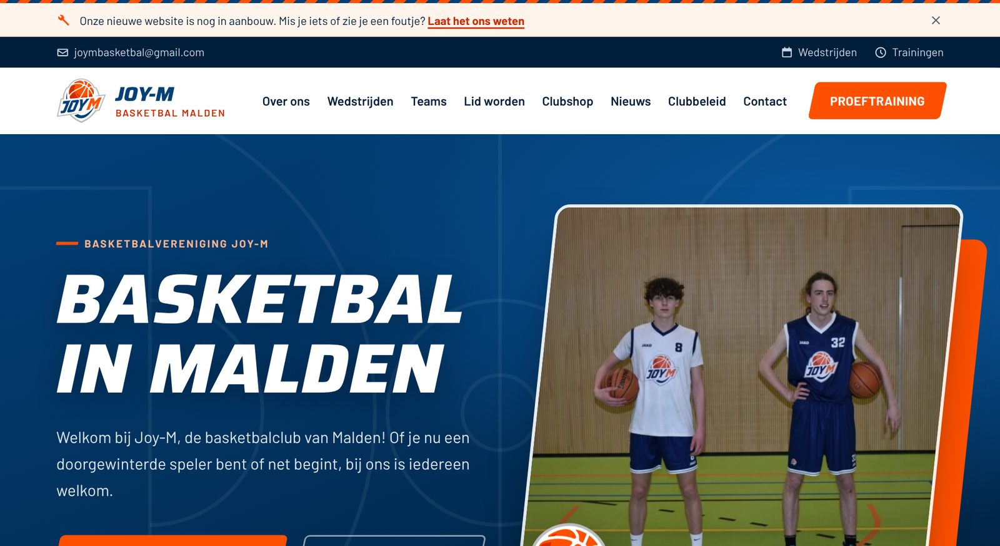
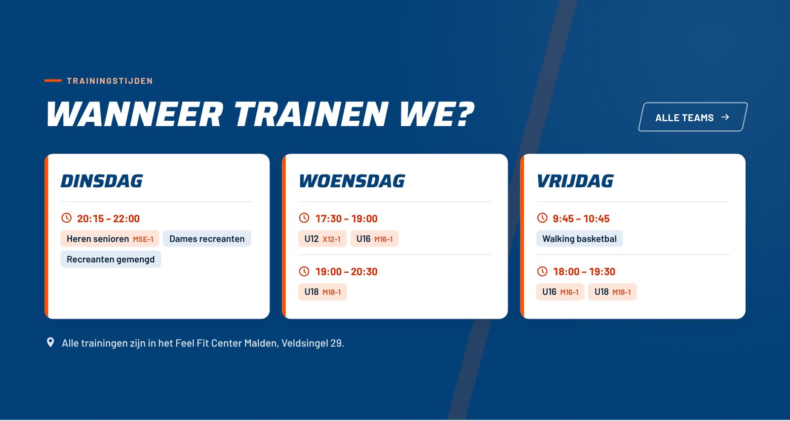
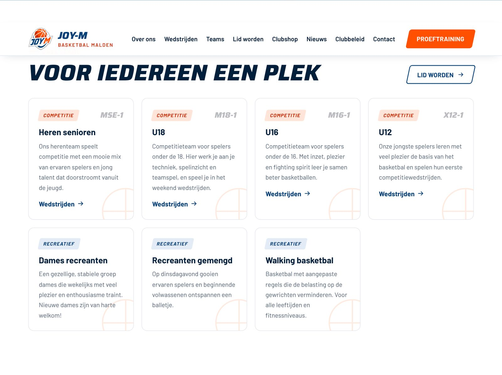
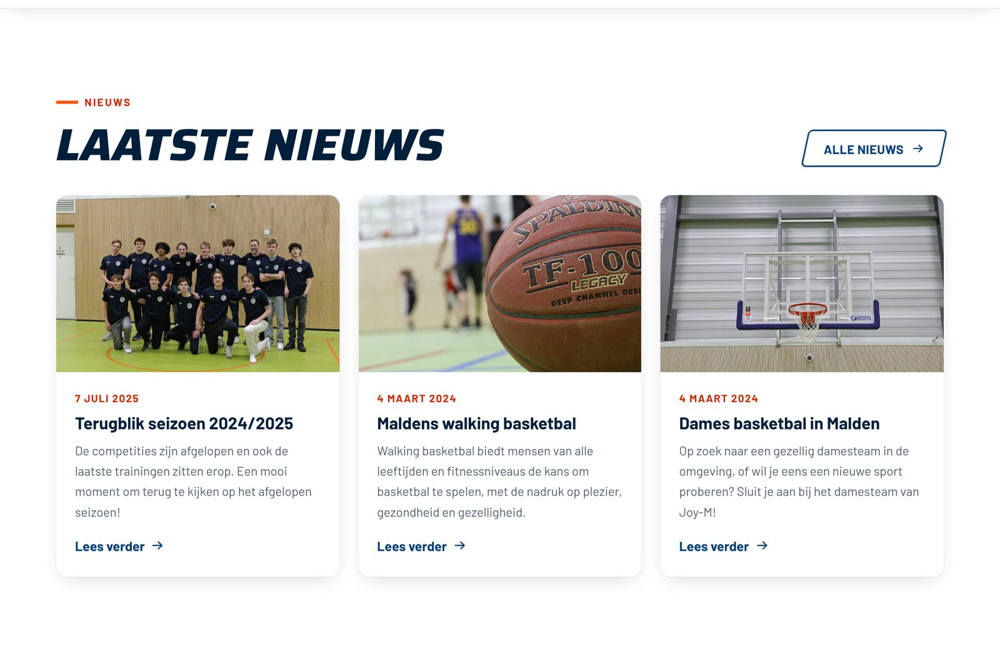
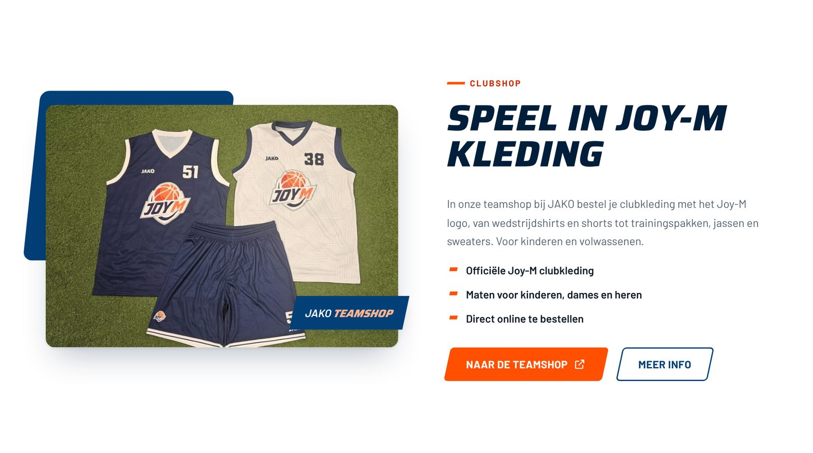
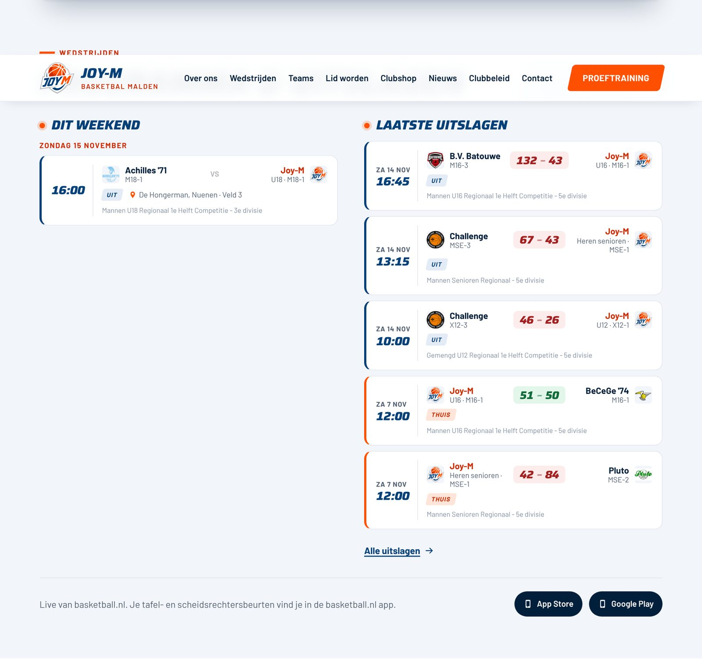
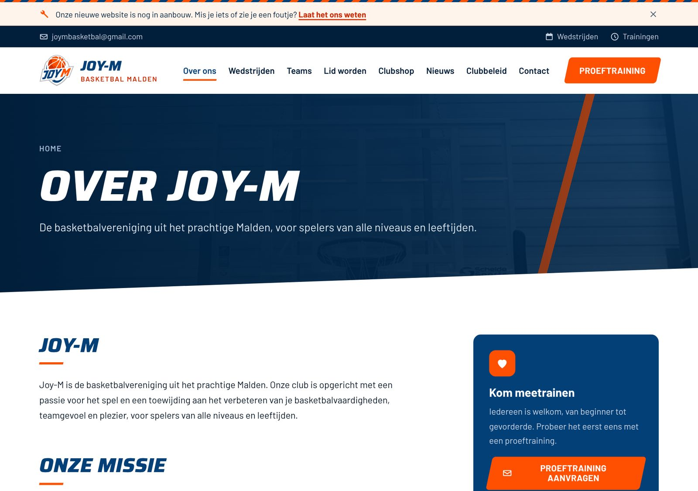
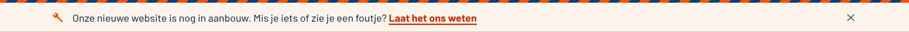

Voor de websitebeheerderNieuwe bestuursleden toegang geven (eenmalig per persoon)
De schermen van het CMS zijn in het Engels (bijvoorbeeld Save voor opslaan). De namen van de onderdelen, zoals Nieuws en Trainingstijden, zijn wel in het Nederlands, die hebben we zelf ingesteld.
1. Hoe werkt de website?
De website joy-m.nl bestaat uit tekstbestanden die in een online opslag staan bij GitHub. Die bestanden pas je niet zelf aan, maar via Pages CMS: een eenvoudige beheeromgeving met invulvelden. Zodra je iets opslaat, bouwt GitHub de website automatisch opnieuw op.
Pages CMSJij past tekst aan en klikt op Save
→
GitHubBewaart de wijziging (met geschiedenis)
→
joy-m.nlBinnen 1–2 minuten bijgewerkt
Je kunt niets echt kapotmaken. Elke wijziging wordt in GitHub bewaard. Gaat er toch iets mis, dan kan de websitebeheerder een eerdere versie terugzetten.
Sommige onderdelen van de site vullen zich automatisch en hoef je dus nooit aan te passen:
Wedstrijden en uitslagen komen live van basketball.nl.
De velden van het aanmeldformulier beheer je in club.basketball.nl, niet in het CMS.
2. Toegang krijgen
Er zijn twee manieren om in het CMS te komen. Voor de meeste bestuursleden is route A het eenvoudigst.
Aanbevolen
Route A: met je e-mailadres
Je hebt geen GitHub-account nodig. Geef je e-mailadres door aan de websitebeheerder; die nodigt je uit (hoofdstuk 8). Daarna log je in met een link die je per mail ontvangt (hoofdstuk 3).
Geschikt voor: teksten, nieuws, trainingstijden, teams en foto's aanpassen.
Voor wie meer wil
Route B: met een GitHub-account
Je maakt een gratis GitHub-account aan en wordt lid van de Joy-M-organisatie op GitHub.
Geschikt voor: alles uit route A, plus anderen uitnodigen en de instellingen van het CMS beheren.
Route B – een GitHub-account aanmaken
Ga naar github.com/login en klik onderaan op Create an account.
Vul je e-mailadres, een wachtwoord en een gebruikersnaam in (bijvoorbeeld voornaam-joym). Kies bij land Netherlands.
Los de controlepuzzel op en vul de code in die GitHub naar je e-mailadres stuurt.
Kies het gratis account (Free). Vragen over je programmeerervaring mag je overslaan.
Stuur je GitHub-gebruikersnaam naar de websitebeheerder.
Je krijgt een mail van GitHub: "…invited you to join the joy-m-basketball organization". Klik op Join (of View invitation en dan Join joy-m-basketball).
GitHub kan je na een tijdje vragen om tweestapsverificatie aan te zetten. Dat is een extra beveiliging met een app op je telefoon, bijvoorbeeld Google Authenticator of Microsoft Authenticator. Volg dan gewoon de stappen op het scherm.

Account aanmaken
De inlogpagina van GitHub (github.com/login). Heb je nog geen account, klik dan op Create an account.
3. Inloggen in het CMS
Het CMS vind je op app.pagescms.org. Zet deze pagina bij je favorieten.

Route B: met GitHub
Route A: met e-mail
Het inlogscherm van Pages CMS.
Route A – met e-mail
Vul je e-mailadres in bij Email.
Klik op Continue with email.
Open de mail van Pages CMS en klik op de inloglink.
Route B – met GitHub
Klik op Sign in with GitHub.
Log in bij GitHub als daarom gevraagd wordt.
De eerste keer vraagt GitHub of Pages CMS toegang mag hebben: klik op Authorize.
Na het inloggen zie je de website(s) waar je toegang toe hebt. Kies joy-m-site. Werk altijd in de branch main: dat is de versie die live op joy-m.nl staat.
Zie je joy-m-site niet staan? Dan is je toegang nog niet (helemaal) ingesteld. Neem contact op met de websitebeheerder.
4. Wegwijs in het CMS
app.pagescms.org
joy-m-site · main
Nieuws
Pagina's
Homepage
Trainingstijden
Teams
Veelgestelde vragen
Clubbeleid (overzicht)
Menu
Instellingen & contactgegevens
Media
Nieuws+ Add
Terugblik seizoen 2024/202507-07-2025
Maldens walking basketbal04-03-2024
Dames basketbal in Malden04-03-2024
Links in het CMS staat een menu met alle onderdelen; klik op een onderdeel om het te openen. Schematische weergave: zo is het CMS van Joy-M ingedeeld. Het echte scherm kan er iets anders uitzien, maar de onderdelen links hebben dezelfde namen.
Welk onderdeel hoort bij welk stuk van de website?
Onderdeel in het CMS
Wat pas je hier aan?
Nieuws
Nieuwsberichten: titel, datum, foto, korte samenvatting en de tekst. De nieuwste 3 staan ook op de homepage.
Pagina's
De tekstpagina's: Over ons, Lid worden, Clubshop, Contact, Veilig sporten, Vertrouwenspersoon, Voorwaarden, Privacyverklaring en Bedankt.
Homepage
De grote kop en tekst bovenaan, het welkomstblok met de drie genummerde punten, het clubshop-blok en de oranje balk onderaan elke pagina.
Trainingstijden
Dagen, tijden en welke teams dan trainen. Staat op de homepage, bij Teams en bij Contact.
Teams
Alle teams met naam, teamcode (bijv. M18-1), competitie of recreatief, en een korte omschrijving.
Veelgestelde vragen
De vragen en antwoorden op de pagina Over ons.
Clubbeleid (overzicht)
De vier kaarten op de pagina Clubbeleid. De teksten van die pagina's zelf staan bij Pagina's.
Menu
De knoppen in het hoofdmenu. Alleen aanpassen als je weet wat je doet.
Instellingen & contactgegevens
E-mailadres, adres van de sporthal, vertrouwenspersoon, links (clubshop, basketball.nl), de banner "in aanbouw" en het aanmeldformulier.
Media
Alle foto's en documenten. Hier upload je nieuwe foto's.
Voorbeelden: wat zie je waar op de website?

Homepage → het bovenste blok (kop, tekst en foto). De smalle oranje balk helemaal bovenaan is de banner (bij Instellingen).

Trainingstijden → dagen, tijden en teams.

Teams → naam, code, soort en omschrijving.

Nieuws → de drie nieuwste berichten.

Homepage → Clubshop-blok. De link naar de shop staat bij Instellingen.

Automatisch: wedstrijden en uitslagen komen van basketball.nl. Hier hoef je niets voor te doen.
5. Veelvoorkomende taken
5.1 Een nieuwsbericht plaatsen
Klik links op Nieuws en daarna rechtsboven op de knop om een nieuw bericht toe te voegen (+ Add).
Vul de Titel en de Datum in. De datum bepaalt de volgorde: het nieuwste bericht staat bovenaan.
Kies bij Uitgelichte afbeelding een foto. Je kunt hier ook een nieuwe foto uploaden.
Schrijf een korte Samenvatting van 1–2 zinnen. Die verschijnt in het nieuwsoverzicht.
Schrijf het Bericht. Met de knoppen boven het tekstvak maak je tekst vet, zet je een kopje of voeg je een link of foto toe.
Klik op Save.
app.pagescms.org · Nieuws · nieuw bericht
Nieuw berichtSave
Oliebollentoernooi 2026
20-12-2026
Kies een afbeelding…
Op 20 december is weer ons gezellige oliebollentoernooi. Doe je mee?
BIH2• lijst🔗🖼
Ook dit jaar organiseren we het oliebollentoernooi…
Schematische weergave van het invulscherm voor een nieuwsbericht. De voorbeeldtekst is verzonnen.
Wil je een bericht later aanpassen? Klik op het bericht in de lijst, wijzig de tekst en klik weer op Save.
5.2 Trainingstijden wijzigen
Klik links op Trainingstijden. Je ziet per dag een blok.
Pas bij een training de Tijd aan, bijvoorbeeld 18:00 – 19:30.
Bij Teams staat per training welke teams er trainen. Voeg een team toe of haal er een weg.
Klik op Save.
Gebruik bij Teams precies de naam zoals bij het onderdeel Teams, bijvoorbeeld U16 of Heren senioren, dus niet M16-1 of heren. Alleen dan verschijnt de juiste teamcode en kleur bij de trainingstijden.
app.pagescms.org · Trainingstijden
TrainingstijdenSave
Vrijdag ▾
9:45 – 10:45
Walking basketbal
18:00 – 19:30
U16U18+ toevoegen
Schematische weergave van de trainingstijden voor vrijdag.
5.3 Een team toevoegen of aanpassen
Klik links op Teams.
Pas een bestaand team aan, of voeg onderaan een nieuw team toe.
Vul in: Naam (bijv. U14), Teamcode zoals bij de NBB (bijv. M14-1, of leeg voor recreatieve teams), Soort (Competitie of Recreatief) en een korte Omschrijving.
Klik op Save. Zet het team daarna ook bij Trainingstijden (zie 5.2).
De teamcode is ook nodig voor de wedstrijden: met die code toont de website bij elke wedstrijd de juiste teamnaam.
5.4 De tekst van een pagina aanpassen
Klik links op Pagina's en kies de pagina, bijvoorbeeld Lid worden.
Titel en Introductie staan bovenaan de pagina, in het blauwe vlak. Bij Inhoud staat de rest van de tekst.
Pas de tekst aan zoals in een tekstverwerker en klik op Save.

De pagina Over ons. De kop en de introductie in het blauwe vlak komen uit Titel en Introductie.
5.5 Een foto uploaden
Klik links op Media en upload de foto. Of upload hem direct bij een afbeeldingsveld, bijvoorbeeld bij een nieuwsbericht.
Gebruik bij voorkeur een liggende foto van maximaal ongeveer 1600 pixels breed. Grotere foto's maken de site traag op telefoons.
Geef de foto een duidelijke naam, zoals u12-toernooi-2026.jpg.
Let op de privacy: plaats alleen foto's van leden die daar geen bezwaar tegen hebben. Voor kinderen beslissen de ouders. Zie ook de privacyverklaring op de website.
5.6 De banner "in aanbouw" aan- of uitzetten
Klik links op Instellingen & contactgegevens en scrol naar Banner bovenaan de site.
Haal het vinkje bij Banner tonen weg om de banner te verbergen, of pas de tekst aan.
Klik op Save.

De banner bovenaan elke pagina.
5.7 Veelgestelde vragen
Klik links op Veelgestelde vragen. Elke vraag heeft een Vraag en een Antwoord. In het antwoord kun je eenvoudige opmaak gebruiken:
Je typt
Op de website
**belangrijk**
belangrijk (vet)
[lid worden](/lid-worden/)
een link met de tekst lid worden naar de pagina Lid worden
[mail ons](mailto:joymbasketbal@gmail.com)
een link die een e-mail opent
5.8 Contactgegevens of de vertrouwenspersoon wijzigen
Klik op Instellingen & contactgegevens. Hier staan het algemene e-mailadres, het adres van de sporthal en de naam en het e-mailadres van de vertrouwenscontactpersoon. Pas je die hier aan, dan verandert het overal op de website tegelijk.
Laat de velden voor het registratieformulier en de basketball.nl-koppeling staan zoals ze zijn, tenzij de websitebeheerder iets anders vraagt. Daarmee werken het aanmeldformulier en het wedstrijdschema.
6. Na het opslaan
Na Save wordt je wijziging direct in GitHub bewaard.
GitHub bouwt de website opnieuw op. Dat duurt meestal 1 tot 2 minuten.
Open joy-m.nl en ververs de pagina:
Windows: Ctrl + F5
Mac: Cmd + Shift + R
Telefoon: trek de pagina omlaag, of sluit het tabblad en open de site opnieuw.
Na 5 minuten nog steeds de oude versie? Dan is er mogelijk iets misgegaan bij het opbouwen. Wie route B gebruikt, kan het controleren op GitHub: ga naar github.com/joy-m-basketball/joy-m-site en kijk bij het tabblad Actions. Een groen vinkje betekent gelukt, een rood kruisje betekent mislukt. Waarschuw in dat geval de websitebeheerder.
7. Tips, valkuilen en hulp
Wel doen
Kijk na het opslaan altijd even op de website of het goed staat, ook op je telefoon.
Houd teksten kort en duidelijk. Veel bezoekers lezen op hun telefoon.
Spreek af wie wat bijhoudt, bijvoorbeeld één persoon voor nieuws en één voor teams en trainingen.
Liever niet
Werk niet met twee personen tegelijk aan hetzelfde onderdeel. De laatste die opslaat, overschrijft de ander.
Pas het Menu of de technische instellingen niet aan zonder overleg met de websitebeheerder.
Verander de bestandsnaam van een pagina niet. Die bepaalt het webadres, en links naar die pagina werken dan niet meer.
Upload geen foto's of documenten met persoonsgegevens, zoals ledenlijsten of adressen.
Hulp nodig?
Kom je er niet uit of is er iets misgegaan? Neem contact op met de websitebeheerder van het bestuur, of mail naar joymbasketbal@gmail.com. Vertel erbij wat je wilde aanpassen en op welke pagina, dan kan het snel worden opgelost of teruggezet.
8. Voor de websitebeheerder
Dit hoofdstuk is voor wie een GitHub-account heeft met beheerrechten op de organisatie joy-m-basketball.
Eenmalig: Pages CMS koppelen aan GitHub
Log in op app.pagescms.org met Sign in with GitHub.
Pages CMS vraagt de Pages CMS GitHub App te installeren. Kies de organisatie joy-m-basketball en geef toegang tot de repository joy-m-site.
Open joy-m-site. De instellingen van het CMS staan al klaar in het bestand .pages.yml.
Een bestuurslid toegang geven via route A (e-mail)
Open in Pages CMS de repository joy-m-site.
Ga naar het onderdeel voor Collaborators (medewerkers) en nodig het bestuurslid uit met zijn of haar e-mailadres.
Het bestuurslid kan daarna inloggen via Continue with email (hoofdstuk 3).
Collaborators via e-mail kunnen teksten en media aanpassen, maar niet de CMS-instellingen of andere collaborators beheren. In GitHub staan hun wijzigingen op naam van de Pages CMS-app.
Een bestuurslid toegang geven via route B (GitHub)
Ga op GitHub naar github.com/orgs/joy-m-basketball/people en klik op Invite member.
Vul de GitHub-gebruikersnaam van het bestuurslid in en kies de rol Member.
Geef daarna schrijfrechten op de website: ga naar github.com/joy-m-basketball/joy-m-site → Settings → Collaborators and teams → Add people, kies de persoon en geef de rol Write.
Het bestuurslid accepteert de uitnodiging uit de mail en kan inloggen met Sign in with GitHub.
Toegang intrekken
Stopt iemand met het bestuur? Verwijder de persoon dan bij Collaborators in Pages CMS (route A), of uit de organisatie op GitHub via People (route B).
Handig om te weten
Elke opslag in het CMS wordt een commit in GitHub. Onder het tabblad Actions zie je of de website goed is gebouwd.
Een fout ongedaan maken: in GitHub kun je bij Commits een eerdere versie van een bestand terugzetten. Laat dit eventueel doen door iemand met ervaring.
De technische uitleg staat in README.md in de repository.